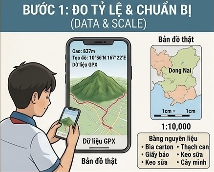

Đo tỷ lệ & Chuẩn bị nguyên liệu
Dữ liệu thực địa: Sử dụng dữ liệu GPX thực tế với độ cao Núi Chứa Chan là 837m, tọa độ địa lý 10°56'N - 107°22'E.
Tỷ lệ mô hình: Tỷ lệ chuẩn 1:10,000 (1cm trên mô hình tương đương 1km ngoài thực tế).
Bảng nguyên liệu: Bìa carton, giấy báo, keo sữa, thạch cao, sơn màu và cây mô hình trang trí.


Dựng nền & Cấu trúc đồng mức
Cắt bìa carton: Bìa carton được cắt định hình theo các lớp đường đồng mức (khoảng cách độ cao từ 50m - 100m - 200m).
Xếp tầng chồng lớp: Dán chồng các lớp bìa carton theo thứ tự từ chân núi lên đỉnh núi để tạo phần khung định hình 3D ban đầu.
Tạo nền vững chắc: Cố định lớp chân đế carton giúp mô hình không bị cong vênh trong quá trình đắp thạch cao sau này.
Tạo địa hình & Sườn núi
Nhồi giấy báo lấp đầy khoảng hẫng, phủ thạch cao làm mịn bề mặt và uốn nắn độ dốc sườn núi từ 20° đến 35°.


Xác định danh thắng & Hoàn thiện phủ xanh
Đánh dấu chính xác các địa danh trọng điểm trên mô hình và tiến hành phủ thảm thực vật đặc trưng của hệ sinh thái rừng mưa.
Đỉnh núi (837m)
Cột mốc độ cao nhất của toàn bộ mô hình.
Cây 3 ngọn linh thiêng
Mô phỏng cây di sản tâm linh nổi tiếng.
Chùa Bửu Quang (Gia Lào)
Tái hiện ngôi chùa nổi tiếng gắn liền với núi.
Trạm cáp treo & 125 cột điện
Điểm nhấn hạ tầng giao thông và năng lượng.

Mô hình 3D Núi Chứa Chan
Quét mã QR hoặc truy cập đường link bên dưới để xoay, thu phóng và khám phá chi tiết địa hình 3D trên thiết bị của bạn.

Mô hình 3D Tương tác
Bản sao địa hình số hóa cho phép bạn nhìn ngắm Núi Chứa Chan từ mọi góc độ, dễ dàng quan sát các thung lũng, độ dốc và thảm thực vật rừng mưa.